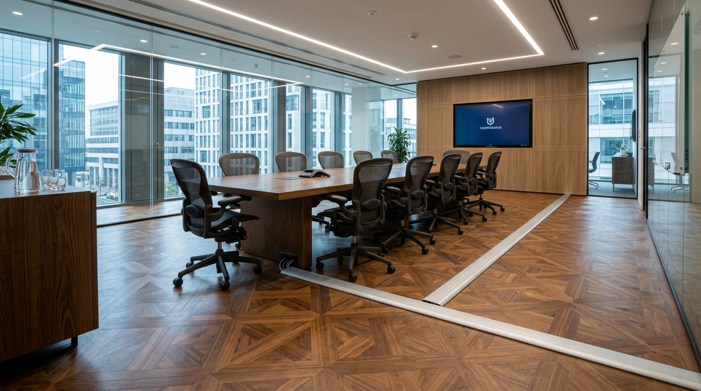

🎧
You (AV Lead)
4YOU AV ENGINE
1.0x
Toàn bộ kịch bản đối thoại
Nhấp vào từ để tra từ điển tức thì
Luyện đọc đuổi & chấm điểm phát âm
Chưa chấm điểm
Loading sentence...
...
Nghe chép chính tả (Type what you hear)
Ctrl + Space để nghe lại
Điền thuật ngữ kỹ thuật vào chỗ trống
0 / 0
Kho từ vựng lựa chọn:
Bộ Từ Vựng Kỹ Thuật AV & Giao Tiếp
Nhấp vào thẻ để lật xem nghĩa tiếng Việt & ví dụ thực tế trên công trường
6 Khung Câu Thực Chiến Dành Cho Kỹ Sư AV
Các cấu trúc câu chuẩn mực quốc tế dùng trong báo cáo kỹ thuật, điều phối thầu phụ và xử lý sự cố
Luyện Phản Xạ Ghép Câu Kỹ Thuật AV
Sắp xếp các từ khóa tiếng Anh thành câu hoàn chỉnh theo yêu cầu kỹ thuật